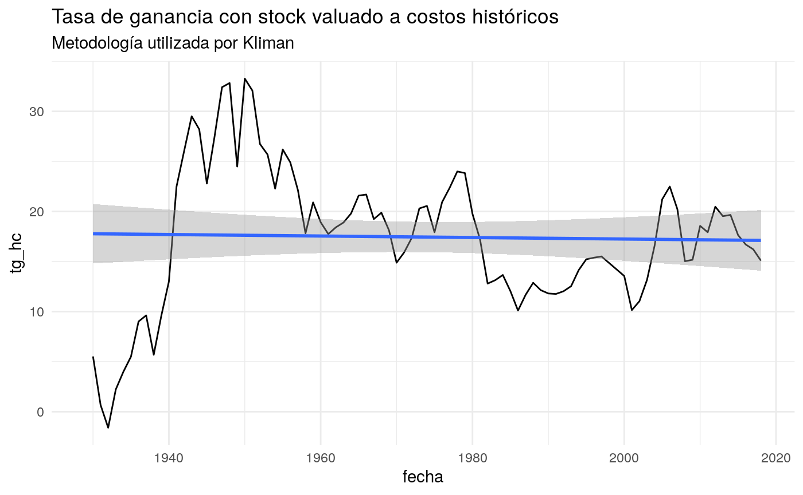
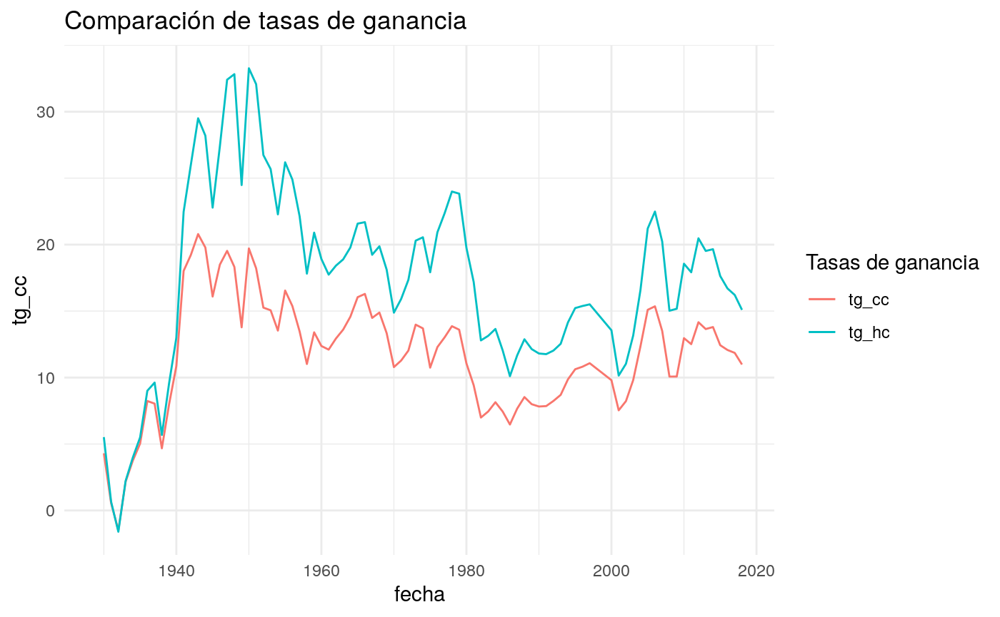
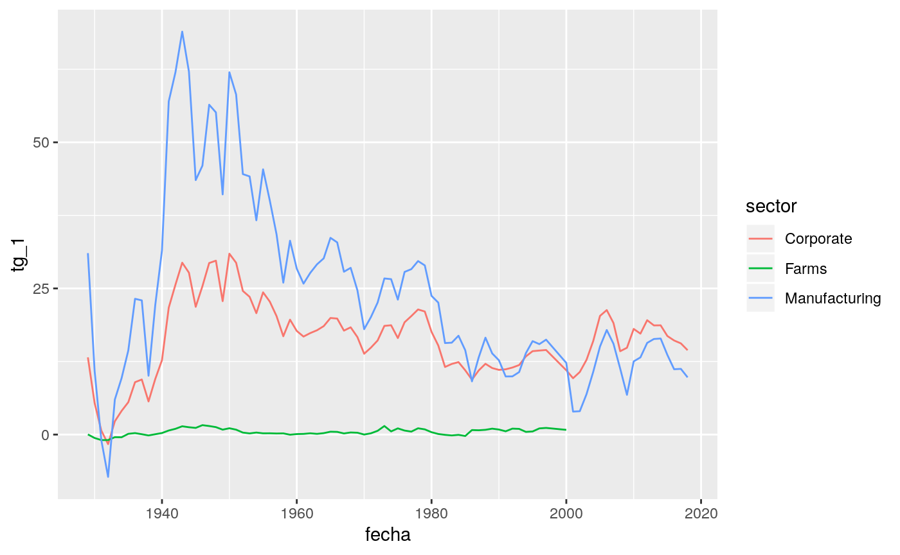

TG.Rmd#función para índices
cpi_anual <- read_csv("../data/cpi.csv") %>%
group_by(Year) %>%
summarise(cpi = mean(Value)) %>%
rename(fecha = Year) %>%
mutate(cpi = generar_indice(serie = cpi,
fecha = fecha,
fecha_base = 2018))## Parsed with column specification:
## cols(
## `Series ID` = col_character(),
## Year = col_double(),
## Period = col_character(),
## Label = col_character(),
## Value = col_double()
## )Ganancia de las corporaciones antes de impuesto (GCAI). Tabla 6.17, A a D. Kliman toma la linea 1. En millones de USD.
Links a los distintos años:
corporate_profits_btaxes_1929_1948 <- read_csv("../data/Table 6.17A. Corporate Profits Before Tax by Industry_1929-1948.csv", skip = 4) %>%
select(-Line) %>%
rename(sector = X2) %>%
na.omit(corporate_profits_btaxes_1929_1948)
corporate_profits_btaxes_1948_1987 <- read_csv("../data/Table 6.17B. Corporate Profits Before Tax by Industry_1948-1987.csv", skip = 4) %>%
select(-Line, -"1948") %>%
rename(sector = X2) %>%
na.omit(corporate_profits_btaxes_1948_1987)
corporate_profits_btaxes_1987_2000 <- read_csv("../data/Table 6.17C. Corporate Profits Before Tax by Industry_1987-2000.csv", skip = 4) %>%
select(-Line, -"1987") %>%
rename(sector = X2) %>%
na.omit(corporate_profits_btaxes_1987_2000)
corporate_profits_btaxes_2000_2018 <- read_csv("../data/Table 6.17D. Corporate Profits Before Tax by Industry_2000-2018.csv", skip = 4) %>%
select(-Line, -"2000") %>%
rename(sector=X2) %>%
na.omit(corporate_profits_btaxes_2000_2018)
#Unificación de bases
corporate_profits_unificacion <- corporate_profits_btaxes_1929_1948 %>%
left_join(corporate_profits_btaxes_1948_1987,by = "sector") %>%
left_join(corporate_profits_btaxes_1987_2000,by = "sector") %>%
left_join(corporate_profits_btaxes_2000_2018,by = "sector") %>%
select(-"1998.y",-"1999.y") %>%
gather(.,
key = fecha,
value = profit_corp,
2:91) %>%
mutate(profit_corp = as.double(profit_corp), #por qué pasa esta conversion a chr?
fecha = as.Date(parse_datetime(fecha, format = "%Y")),
sector = case_when(sector == "Corporate profits before tax" ~ "Corporate",
TRUE ~ sector))
corporate_profits_unificacion## # A tibble: 6,660 x 3
## sector fecha profit_corp
## <chr> <date> <dbl>
## 1 Corporate 1929-01-01 10911
## 2 Domestic industries 1929-01-01 10679
## 3 Agriculture, forestry, and fisheries 1929-01-01 11
## 4 Farms 1929-01-01 2
## 5 Agricultural services, forestry, and fisheries 1929-01-01 9
## 6 Mining 1929-01-01 472
## 7 Metal mining 1929-01-01 253
## 8 Anthracite mining 1929-01-01 10
## 9 Bituminous and other soft coal mining1 1929-01-01 16
## 10 Crude petroleum and natural gas 1929-01-01 133
## # … with 6,650 more rowsStock Neto de los activos privados fijos de las corporaciones a precios históricos. Tabla 6.3. Kliman toma la línea 2, es decir, el stock de las Corporate unicamente. Organizada por industria y por forma legal. Serie de 1929 a 2018. Originalmente en billones de USD (modificada a millones).
stock_corp_hc <- read_csv("../data/Table 6.3. Historical-Cost Net Stock of Private Fixed Assets by Industry Group and Legal Form of Organization.csv", skip = 4) %>%
select(-Line) %>%
rename(sector = X2) %>%
na.omit(stock_corp_hc) %>%
gather(.,
key = fecha,
value = stock,
2:95) %>%
mutate(stock_hc = stock * 1000,
fecha = as.Date(parse_datetime(fecha, format = "%Y"))) %>%
select(fecha, everything(.), -stock)
stock_corp_hc ## # A tibble: 1,222 x 3
## fecha sector stock_hc
## <date> <chr> <dbl>
## 1 1925-01-01 Private fixed assets 148100
## 2 1925-01-01 Corporate 70500
## 3 1925-01-01 Financial 2200
## 4 1925-01-01 Nonfinancial 68200
## 5 1925-01-01 Noncorporate 77600
## 6 1925-01-01 Sole proprietorships 18600
## 7 1925-01-01 Partnerships 6100
## 8 1925-01-01 Nonprofit institutions 5300
## 9 1925-01-01 Households 47600
## 10 1925-01-01 Tax-exempt cooperatives 0
## # … with 1,212 more rowsStock Neto de los activos privados fijos de las corporaciones a precios corrientes (Tabla 6.1). Mismas características que la serie a precios históricos.
stock_corp_cc <- read_csv("../data/stock_current_cost.csv",
skip = 4) %>%
select(-Line) %>%
rename(sector = X2) %>%
na.omit(stock_corp_hc) %>%
gather(.,
key = fecha,
value = stock,
2:95) %>%
mutate(stock = stock * 1000,
fecha = as.Date(parse_datetime(fecha, format = "%Y"))) %>%
select(fecha, everything(.)) %>%
rename(sector.x = sector, stock_cc = stock)## Warning: Missing column names filled in: 'X2' [2]## Parsed with column specification:
## cols(
## .default = col_double(),
## X2 = col_character()
## )## See spec(...) for full column specifications.## # A tibble: 1,222 x 3
## fecha sector.x stock_cc
## <date> <chr> <dbl>
## 1 1925-01-01 Private fixed assets 223400
## 2 1925-01-01 Corporate 100100
## 3 1925-01-01 Financial 3100
## 4 1925-01-01 Nonfinancial 97000
## 5 1925-01-01 Noncorporate 123200
## 6 1925-01-01 Sole proprietorships 26300
## 7 1925-01-01 Partnerships 7900
## 8 1925-01-01 Nonprofit institutions 8100
## 9 1925-01-01 Households 80900
## 10 1925-01-01 Tax-exempt cooperatives 0
## # … with 1,212 more rowsrop <- stock_corp_hc %>%
left_join(corporate_profits_unificacion, by = "fecha") %>%
left_join(stock_corp_cc, by = c("sector.x", "fecha")) %>%
filter(sector.x == "Corporate",
sector.y == "Corporate") %>%
mutate(stock_hc_anio_ant = lag(stock_hc, k = 1),
stock_cc_anio_ant = lag(stock_cc, k = 1),
tg_hc = profit_corp / stock_hc_anio_ant * 100,
tg_cc = profit_corp / stock_cc_anio_ant * 100 ) %>%
select(fecha, stock_hc, stock_hc_anio_ant, stock_cc, stock_cc_anio_ant,
profit_corp, tg_cc, tg_hc)
rop## # A tibble: 88 x 8
## fecha stock_hc stock_hc_anio_a… stock_cc stock_cc_anio_a…
## <date> <dbl> <dbl> <dbl> <dbl>
## 1 1929-01-01 82600 NA 106000 NA
## 2 1930-01-01 84500 82600 101000 106000
## 3 1931-01-01 84200 84500 90700 101000
## 4 1932-01-01 82400 84200 84700 90700
## 5 1933-01-01 80600 82400 85500 84700
## 6 1934-01-01 79500 80600 86800 85500
## 7 1935-01-01 78900 79500 86300 86800
## 8 1936-01-01 79300 78900 94900 86300
## 9 1937-01-01 81000 79300 98400 94900
## 10 1938-01-01 81200 81000 97200 98400
## # … with 78 more rows, and 3 more variables: profit_corp <dbl>,
## # tg_cc <dbl>, tg_hc <dbl>#Gráficos
# Tg de kliman
g1 <- rop %>%
ggplot(aes(fecha, tg_hc))+
geom_line()+
labs(title = "Tasa de ganancia con stock valuado a costos históricos",
subtitle = "Metodología utilizada por Kliman")+
geom_smooth(size = 1, linetype = 1, method = "lm", se = TRUE)+
theme(legend.position = 'none')+
theme_minimal()
g1## Warning: Removed 1 rows containing non-finite values (stat_smooth).## Warning: Removed 1 rows containing missing values (geom_path).
# comparación de tg's
g2 <- rop %>%
ggplot(aes(fecha, tg_cc, color = "tg_cc"))+
geom_line()+
geom_line(aes(fecha, tg_hc, color = "tg_hc"))+
scale_color_discrete(name = "Tasas de ganancia") + #como modificar este label?
labs(title = "Comparación de tasas de ganancia") +
theme_minimal()
g2## Warning: Removed 1 rows containing missing values (geom_path).
## Warning: Removed 1 rows containing missing values (geom_path).
# ruta_arch <- "comparacion_tg.png"
# png(ruta_arch)
# plot(g2)
# dev.off()
# Resumen tg's
rop %>% select(tg_cc, tg_hc) %>% summary(rop)## tg_cc tg_hc
## Min. :-1.484 Min. :-1.599
## 1st Qu.: 8.386 1st Qu.:12.941
## Median :12.102 Median :17.820
## Mean :11.703 Mean :17.445
## 3rd Qu.:14.071 3rd Qu.:21.636
## Max. :20.793 Max. :33.268
## NA's :1 NA's :1#problema para calcularla con el stock del año anterior
rop_rama <- stock_corp_hc %>%
filter(sector %in% c("Private fixed assets", "Corporate", "Farms", "Manufacturing")) %>%
left_join(corporate_profits_unificacion, by = c("fecha", "sector")) %>%
group_by(fecha, sector) %>%
summarise(tg_1 = profit_corp / stock_hc * 100)
rop_rama## # A tibble: 376 x 3
## # Groups: fecha [94]
## fecha sector tg_1
## <date> <chr> <dbl>
## 1 1925-01-01 Corporate NA
## 2 1925-01-01 Farms NA
## 3 1925-01-01 Manufacturing NA
## 4 1925-01-01 Private fixed assets NA
## 5 1926-01-01 Corporate NA
## 6 1926-01-01 Farms NA
## 7 1926-01-01 Manufacturing NA
## 8 1926-01-01 Private fixed assets NA
## 9 1927-01-01 Corporate NA
## 10 1927-01-01 Farms NA
## # … with 366 more rowsg2 <- rop_rama %>%
filter(!is.na(tg_1)) %>%
ggplot(aes(fecha, tg_1, color = sector)) +
geom_line()
g2
Billions of dollars; yearend estimates. Transformado a millones.
stock_total_cc <- read_csv("../data/stock_total_cc.csv",
skip = 4) %>%
select(-Line) %>%
rename(sector = X2) %>%
na.omit(stock_total_cc) %>%
gather(.,
key = fecha,
value = stock_cc,
2:95) %>%
mutate(stock_cc = stock_cc * 1000,
fecha = as.Date(parse_datetime(fecha, format = "%Y"))) %>%
select(fecha, everything(.))## Warning: Missing column names filled in: 'X2' [2]## Parsed with column specification:
## cols(
## .default = col_double(),
## X2 = col_character()
## )## See spec(...) for full column specifications.## # A tibble: 2,256 x 3
## fecha sector stock_cc
## <date> <chr> <dbl>
## 1 1925-01-01 Fixed assets and consumer durable goods 297500
## 2 1925-01-01 Fixed assets 261700
## 3 1925-01-01 Private 223400
## 4 1925-01-01 Nonresidential 127000
## 5 1925-01-01 Equipment 31100
## 6 1925-01-01 Structures 94000
## 7 1925-01-01 Intellectual property products 1900
## 8 1925-01-01 Residential 96400
## 9 1925-01-01 Government 38300
## 10 1925-01-01 Nonresidential 38300
## # … with 2,246 more rows[Millions of dollars]
Legend/Footnotes 1. Equals net domestic product excluding net value added of households and institutions and of general government. 2. Equals net domestic business value added excluding net farm value added. 3. Equals gross value added of nonprofit institutions excluding consumption of fixed capital on fixed assets owned and used by nonprofit instututions serving households. 4. Equals compensation of general government employees.
net_va <- read_csv("../data/Net Value Added by Sector.csv",
skip = 4) %>%
select(-Line) %>%
rename(sector = X2) %>%
na.omit(net_va) %>%
gather(.,
key = fecha,
value = net_va_corr,
2:91) %>%
mutate(fecha = as.Date(parse_datetime(fecha, format = "%Y"))) %>%
select(fecha, everything(.))## Warning: Missing column names filled in: 'X2' [2]## Parsed with column specification:
## cols(
## .default = col_double(),
## Line = col_character(),
## X2 = col_character()
## )## See spec(...) for full column specifications.## Warning: 5 parsing failures.
## row col expected actual file
## 12 -- 92 columns 1 columns '../data/Net Value Added by Sector.csv'
## 13 -- 92 columns 1 columns '../data/Net Value Added by Sector.csv'
## 14 -- 92 columns 1 columns '../data/Net Value Added by Sector.csv'
## 15 -- 92 columns 1 columns '../data/Net Value Added by Sector.csv'
## 16 -- 92 columns 1 columns '../data/Net Value Added by Sector.csv'## # A tibble: 900 x 3
## fecha sector net_va_corr
## <date> <chr> <dbl>
## 1 1929-01-01 Net domestic product 94148
## 2 1929-01-01 Business1 81788
## 3 1929-01-01 Nonfarm2 73575
## 4 1929-01-01 Farm 8213
## 5 1929-01-01 Households and institutions 7776
## 6 1929-01-01 Households 6474
## 7 1929-01-01 Nonprofit institutions serving households3 1302
## 8 1929-01-01 General government4 4584
## 9 1929-01-01 Federal 1053
## 10 1929-01-01 State and local 3531
## # … with 890 more rowsIn Thousands
Legend/Footnotes 1. sector$Persons engaged in production: Equals the number of full-time equivalent employees plus the number of self-employed persons. Unpaid family workers are not included.
# Carga de bases de distintos años
persons_engaged_29_48 <- read_csv("../data/Persons Engaged in Production by Industry_29_48.csv",
skip = 4) %>%
select(-Line) %>%
rename(sector = X2) %>%
na.omit(persons_engaged_29_48) %>%
select(-"1948") %>%
gather(.,
key = fecha,
value = employ,
2:20) %>%
mutate(fecha = as.Date(parse_datetime(fecha, format = "%Y")),
sector = gsub('[[:digit:]]+', '', sector),
employ = as.double(employ)) %>%
select(fecha, everything(.))## Warning: Missing column names filled in: 'X2' [2]## Parsed with column specification:
## cols(
## .default = col_character(),
## `1933` = col_double(),
## `1934` = col_double(),
## `1935` = col_double(),
## `1936` = col_double(),
## `1937` = col_double(),
## `1938` = col_double(),
## `1939` = col_double(),
## `1940` = col_double(),
## `1941` = col_double(),
## `1942` = col_double()
## )## See spec(...) for full column specifications.## Warning: 9 parsing failures.
## row col expected actual file
## 90 -- 22 columns 1 columns '../data/Persons Engaged in Production by Industry_29_48.csv'
## 91 -- 22 columns 1 columns '../data/Persons Engaged in Production by Industry_29_48.csv'
## 92 -- 22 columns 1 columns '../data/Persons Engaged in Production by Industry_29_48.csv'
## 93 -- 22 columns 1 columns '../data/Persons Engaged in Production by Industry_29_48.csv'
## 94 -- 22 columns 1 columns '../data/Persons Engaged in Production by Industry_29_48.csv'
## ... ... .......... ......... .............................................................
## See problems(...) for more details.## Warning: NAs introduced by coercionpersons_engaged_48_87 <- read_csv("../data/Persons Engaged in Production by Industry_48_87.csv",
skip = 4) %>%
select(-Line) %>%
rename(sector = X2) %>%
na.omit(persons_engaged_48_87) %>%
select(- "1987") %>%
gather(.,
key = fecha,
value = employ,
2:40) %>%
mutate(fecha = as.Date(parse_datetime(fecha, format = "%Y")),
sector = gsub('[[:digit:]]+', '', sector),
employ = as.double(employ)) %>%
select(fecha, everything(.))## Warning: Missing column names filled in: 'X2' [2]## Parsed with column specification:
## cols(
## .default = col_character(),
## `1975` = col_double(),
## `1976` = col_double(),
## `1977` = col_double(),
## `1978` = col_double(),
## `1979` = col_double(),
## `1980` = col_double(),
## `1981` = col_double(),
## `1982` = col_double(),
## `1983` = col_double(),
## `1984` = col_double(),
## `1985` = col_double(),
## `1986` = col_double(),
## `1987` = col_double()
## )
## See spec(...) for full column specifications.## Warning: 5 parsing failures.
## row col expected actual file
## 89 -- 42 columns 1 columns '../data/Persons Engaged in Production by Industry_48_87.csv'
## 90 -- 42 columns 1 columns '../data/Persons Engaged in Production by Industry_48_87.csv'
## 91 -- 42 columns 1 columns '../data/Persons Engaged in Production by Industry_48_87.csv'
## 92 -- 42 columns 1 columns '../data/Persons Engaged in Production by Industry_48_87.csv'
## 93 -- 42 columns 1 columns '../data/Persons Engaged in Production by Industry_48_87.csv'
## Warning: NAs introduced by coercionpersons_engaged_87_00 <- read_csv("../data/Persons Engaged in Production by Industry_87_00.csv",
skip = 4) %>%
select(-Line) %>%
rename(sector = X2) %>%
na.omit(persons_engaged_87_00) %>%
select(-c("1998","1999", "2000")) %>%
gather(.,
key = fecha,
value = employ,
2:12) %>%
mutate(fecha = as.Date(parse_datetime(fecha, format = "%Y")),
sector = gsub('[[:digit:]]+', '', sector)) %>%
select(fecha, everything(.))## Warning: Missing column names filled in: 'X2' [2]## Parsed with column specification:
## cols(
## Line = col_character(),
## X2 = col_character(),
## `1987` = col_double(),
## `1988` = col_double(),
## `1989` = col_double(),
## `1990` = col_double(),
## `1991` = col_double(),
## `1992` = col_double(),
## `1993` = col_double(),
## `1994` = col_double(),
## `1995` = col_double(),
## `1996` = col_double(),
## `1997` = col_double(),
## `1998` = col_double(),
## `1999` = col_double(),
## `2000` = col_double()
## )## Warning: 8 parsing failures.
## row col expected actual file
## 89 -- 16 columns 1 columns '../data/Persons Engaged in Production by Industry_87_00.csv'
## 90 -- 16 columns 1 columns '../data/Persons Engaged in Production by Industry_87_00.csv'
## 91 -- 16 columns 1 columns '../data/Persons Engaged in Production by Industry_87_00.csv'
## 92 -- 16 columns 1 columns '../data/Persons Engaged in Production by Industry_87_00.csv'
## 93 -- 16 columns 1 columns '../data/Persons Engaged in Production by Industry_87_00.csv'
## ... ... .......... ......... .............................................................
## See problems(...) for more details.persons_engaged_98_18 <- read_csv("../data/Persons Engaged in Production by Industry_98_18.csv",
skip = 4) %>%
select(-Line) %>%
rename(sector = X2) %>%
na.omit(persons_engaged_98_18) %>%
gather(.,
key = fecha,
value = employ,
2:22) %>%
mutate(fecha = as.Date(parse_datetime(fecha, format = "%Y")),
sector = gsub('[[:digit:]]+', '', sector)) %>%
select(fecha, everything(.))## Warning: Missing column names filled in: 'X2' [2]## Parsed with column specification:
## cols(
## .default = col_double(),
## Line = col_character(),
## X2 = col_character()
## )
## See spec(...) for full column specifications.## Warning: 12 parsing failures.
## row col expected actual file
## 99 -- 23 columns 1 columns '../data/Persons Engaged in Production by Industry_98_18.csv'
## 100 -- 23 columns 1 columns '../data/Persons Engaged in Production by Industry_98_18.csv'
## 101 -- 23 columns 1 columns '../data/Persons Engaged in Production by Industry_98_18.csv'
## 102 -- 23 columns 1 columns '../data/Persons Engaged in Production by Industry_98_18.csv'
## 103 -- 23 columns 1 columns '../data/Persons Engaged in Production by Industry_98_18.csv'
## ... ... .......... ......... .............................................................
## See problems(...) for more details.# Unificación de bases
persons_engaged <- persons_engaged_29_48 %>%
bind_rows(persons_engaged_48_87) %>%
bind_rows(persons_engaged_87_00) %>%
bind_rows(persons_engaged_98_18)
unique(persons_engaged$sector) ## [1] "Persons engaged in production"
## [2] "Domestic industries"
## [3] "Private industries"
## [4] "Agriculture, forestry, and fisheries"
## [5] "Farms"
## [6] "Agricultural services, forestry, and fisheries"
## [7] "Mining"
## [8] "Metal mining"
## [9] "Anthracite mining"
## [10] "Bituminous and other soft coal mining"
## [11] "Crude petroleum and natural gas"
## [12] "Nonmetallic mining and quarrying"
## [13] "Contract construction"
## [14] "Manufacturing"
## [15] "Durable goods"
## [16] "Lumber and basic timber products"
## [17] "Furniture and finished lumber products"
## [18] "Stone, clay, and glass products"
## [19] "Iron and steel and their products, including ordnance"
## [20] "Nonferrous metals and their products"
## [21] "Machinery, except electrical"
## [22] "Electric and electronic equipment"
## [23] "Motor vehicles and equipment"
## [24] "Other transportation equipment"
## [25] "Miscellaneous manufacturing, including instruments and miscellaneous plastic products"
## [26] "Nondurable goods"
## [27] "Food and kindred products"
## [28] "Tobacco manufactures"
## [29] "Textile mill products"
## [30] "Apparel and other textile products"
## [31] "Paper and allied products"
## [32] "Printing and publishing"
## [33] "Chemicals and allied products"
## [34] "Petroleum and coal products"
## [35] "Rubber products"
## [36] "Leather and leather products"
## [37] "Transportation and public utilities"
## [38] "Transportation"
## [39] "Railroad transportation"
## [40] "Local and interurban passenger transit"
## [41] "Trucking and warehousing"
## [42] "Water transportation"
## [43] "Transportation by air"
## [44] "Pipelines, except natural gas"
## [45] "Transportation services"
## [46] "Communication"
## [47] "Telephone and telegraph"
## [48] "Radio and television broadcasting"
## [49] "Electric, gas, and sanitary services"
## [50] "Utilities: electric and gas"
## [51] "Local utilities and public services, n.e.c."
## [52] "Wholesale trade"
## [53] "Retail trade and automobile services"
## [54] "Finance, insurance, and real estate"
## [55] "Banking"
## [56] "Security and commodity brokers, and services"
## [57] "Credit agencies (other than banks) and holding and other investment companies"
## [58] "Insurance carriers"
## [59] "Insurance agents, brokers, and service"
## [60] "Real estate"
## [61] "Services"
## [62] "Hotels and other lodging places"
## [63] "Personal services"
## [64] "Commercial and trade schools and employment agencies"
## [65] "Business services"
## [66] "Miscellaneous repair services"
## [67] "Motion pictures"
## [68] "Amusement and recreation services"
## [69] "Health services"
## [70] "Legal services"
## [71] "Educational services, n.e.c."
## [72] "Membership organizations"
## [73] "Miscellaneous professional services"
## [74] "Private households"
## [75] "Government"
## [76] "Federal"
## [77] "General government"
## [78] "Civilian, except work relief"
## [79] "Military"
## [80] "Work relief"
## [81] "Government enterprises"
## [82] "State and local"
## [83] "Public education"
## [84] "Nonschool, except work relief"
## [85] "Rest of the world"
## [86] "Agriculture, forestry, and fishing"
## [87] "Agricultural services, forestry, and fishing"
## [88] "Coal mining"
## [89] "Oil and gas extraction"
## [90] "Nonmetallic minerals, except fuels"
## [91] "Construction"
## [92] "Lumber and wood products"
## [93] "Furniture and fixtures"
## [94] "Primary metal industries"
## [95] "Fabricated metal products"
## [96] "Instruments and related products"
## [97] "Miscellaneous manufacturing industries"
## [98] "Rubber and miscellaneous plastics products"
## [99] "Radio and television"
## [100] "Retail trade"
## [101] "Credit agencies other than banks"
## [102] "Security and commodity brokers"
## [103] "Holding and other investment offices"
## [104] "Auto repair, services, and parking"
## [105] "Educational services"
## [106] "Social services and membership organizations"
## [107] "Social services"
## [108] "Civilian"
## [109] "Education"
## [110] "Other"
## [111] "Industrial machinery and equipment"
## [112] "Electronic and other electric equipment"
## [113] "Tobacco products"
## [114] "Communications"
## [115] "Depository institutions"
## [116] "Nondepository institutions"
## [117] "Other services"
## [118] "Agriculture, forestry, fishing, and hunting"
## [119] "Forestry, fishing, and related activities"
## [120] "Mining, except oil and gas"
## [121] "Support activities for mining"
## [122] "Utilities"
## [123] "Wood products"
## [124] "Nonmetallic mineral products"
## [125] "Primary metals"
## [126] "Machinery"
## [127] "Computer and electronic products"
## [128] "Electrical equipment, appliances, and components"
## [129] "Motor vehicles, bodies and trailers, and parts"
## [130] "Furniture and related products"
## [131] "Miscellaneous manufacturing"
## [132] "Food and beverage and tobacco products"
## [133] "Textile mills and textile product mills"
## [134] "Apparel and leather and allied products"
## [135] "Paper products"
## [136] "Printing and related support activities"
## [137] "Chemical products"
## [138] "Plastics and rubber products"
## [139] "Motor vehicle and parts dealers"
## [140] "Food and beverage stores"
## [141] "General merchandise stores"
## [142] "Other retail"
## [143] "Transportation and warehousing"
## [144] "Air transportation"
## [145] "Rail transportation"
## [146] "Truck transportation"
## [147] "Transit and ground passenger transportation"
## [148] "Pipeline transportation"
## [149] "Other transportation and support activities"
## [150] "Warehousing and storage"
## [151] "Information"
## [152] "Publishing industries (includes software)"
## [153] "Motion picture and sound recording industries"
## [154] "Broadcasting and telecommunications"
## [155] "Information and data processing services"
## [156] "Finance and insurance"
## [157] "Federal Reserve banks, credit intermediation, and related activities"
## [158] "Securities, commodity contracts, and investments"
## [159] "Insurance carriers and related activities"
## [160] "Funds, trusts, and other financial vehicles"
## [161] "Real estate and rental and leasing"
## [162] "Rental and leasing services and lessors of intangible assets"
## [163] "Professional, scientific, and technical services"
## [164] "Computer systems design and related services"
## [165] "Miscellaneous professional, scientific, and technical services"
## [166] "Management of companies and enterprises"
## [167] "Administrative and waste management services"
## [168] "Administrative and support services"
## [169] "Waste management and remediation services"
## [170] "Health care and social assistance"
## [171] "Ambulatory health care services"
## [172] "Hospitals"
## [173] "Nursing and residential care facilities"
## [174] "Social assistance"
## [175] "Arts, entertainment, and recreation"
## [176] "Performing arts, spectator sports, museums, and related activities"
## [177] "Amusements, gambling, and recreation industries"
## [178] "Accommodation and food services"
## [179] "Accommodation"
## [180] "Food services and drinking places"
## [181] "Other services, except government"Table 6.6A. Wages and Salaries Per Full-Time Equivalent Employee by Industry
https://apps.bea.gov/iTable/iTable.cfm?reqid=19&step=3&isuri=1&nipa_table_list=198&categories=survey
Consumo intermedio
Intermediate Inputs by Industry
https://apps.bea.gov/iTable/iTable.cfm?reqid=51&step=51&isuri=1&table_list=20&series=a
Rotación BEA https://theplanningmotivedotcom.files.wordpress.com/2019/05/academia-turnover-article-pdf.pdf (página 2)
GO: Gross Output by Industry https://apps.bea.gov/iTable/iTable.cfm?reqid=51&step=51&isuri=1&table_list=15&series=a
VA: https://apps.bea.gov/iTable/iTable.cfm?reqid=51&step=51&isuri=1&table_list=1&series=a